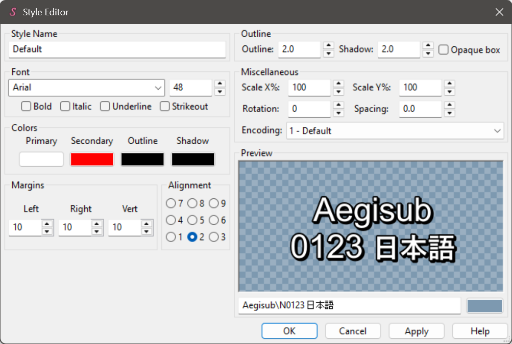

Tutorial: Exploring ASS Values with PyonFX
Welcome to the first tutorial of PyonFX! In this guide, you'll learn how to use PyonFX to process an ASS file, extract its data, and explore its structure effectively.
We assume you have already read the Install & Set-up tutorial.
Materials
Before starting, please download the following ASS file: hello_world.ass
We will use this file throughout the current and future tutorials.
Code Walkthrough
0. Importing PyonFX
Let's start by importing PyonFX. It's a good practice to import only the classes you need, so for this tutorial we'll import only the Ass class.
from pyonfx import Ass
The Ass class is the primary interface for working with ASS files. It handles file loading, parsing, manipulation, and output generation, serving as your main tool for subtitle processing.
1. Loading and Parsing the ASS File
Next, we load the ASS file using the Ass class. The string you pass to Ass(...) is the path to your .ass subtitle file — it can be either relative (like "hello_world.ass") or absolute (for example "C:\\videos\\subs\\hello_world.ass"). Upon initialization, the class immediately parses the file, and you can access the data using the get_data method (see the Ass documentation for details):
io = Ass("hello_world.ass")
meta, styles, lines = io.get_data()
Now you have three important objects to work with:
meta: contains metadata from the ASS filestyles: a dictionary of styles defined in the ASS filelines: a list of dialogue lines with detailed segmentation
2. Displaying ASS Data
Let's take a closer look at these objects.
Viewing Metadata:
Print the meta object to see the extracted metadata:
print(meta)
Show Output
Meta(wrap_style=0, scaled_border_and_shadow=True, play_res_x=1280, play_res_y=720, audio=None, video='?dummy:23.976000:480:1280:720:59:59:59:', timestamps=<video_timestamps.fps_timestamps.FPSTimestamps object at 0x000001FB6F9864B0>)
Notably, the metadata includes audio and video file references (audio and video), display resolution (play_res_x and play_res_y), and a timestamp object associated with the video file (timestamps). For a complete list of attributes and their meanings, refer to the Meta documentation.
Exploring Styles:
To inspect the styles, iterate over the styles dictionary:
for style_name, style in styles.items():
print(f'"{style_name}": {style}\n')
Show Output
"Romaji": Style(name='Romaji', fontname='Arial', fontsize=40.0, color1='&HFFFFFF&', alpha1='&H00&', color2='&H0000FF&', alpha2='&H00&', color3='&H000000&', alpha3='&H00&', color4='&H000000&', alpha4='&H00&', bold=True, italic=False, underline=False, strikeout=False, scale_x=100.0, scale_y=100.0, spacing=0.0, angle=0.0, border_style=False, outline=2.0, shadow=0.0, alignment=8, margin_l=12, margin_r=15, margin_v=15, encoding=1)
"Subtitle": Style(name='Subtitle', fontname='Arial', fontsize=40.0, color1='&HFFFFFF&', alpha1='&H00&', color2='&H0000FF&', alpha2='&H00&', color3='&H000000&', alpha3='&H00&', color4='&H000000&', alpha4='&H00&', bold=True, italic=False, underline=False, strikeout=False, scale_x=100.0, scale_y=100.0, spacing=0.0, angle=0.0, border_style=False, outline=2.0, shadow=0.0, alignment=2, margin_l=12, margin_r=15, margin_v=15, encoding=1)
This should look familiar! The structure closely resembles what you'd find in Aegisub's style editor:

For more details on each attribute, see the Style documentation.
Inspecting Dialogue Lines:
Now, let's print the first dialogue line to observe its structure:
print(lines[0])
Show Output
Line(comment=False, layer=0, start_time=1000, end_time=3000, style='Romaji', styleref=Style(fontname='Arial', ...), actor='', margin_l=0, margin_r=0, margin_v=0, effect='', raw_text='{\\k50}Hel{\\k50}lo {\\k50}world!', text='Hello world!', i=0, leadin=1001, leadout=1001, width=204.84375, height=40.0, ascent=32.40625, descent=7.59375, internal_leading=4.203125, external_leading=1.171875, x=638.5, y=15, left=536.078125, center=638.5, right=740.921875, top=15, middle=35.0, bottom=55.0, words=[Word(i=0, text='Hello', ...), ... (+1 more)], syls=[Syllable(i=0, text='Hel', ...), ... (+2 more)], chars=[Char(i=0, text='H', ...), ... (+11 more)])
This should also look familiar — it contains many properties you'd find in Aegisub's Line Editor:

In particular, you can see timing information (start_time and end_time), the applied style name and its corresponding object (style and styleref), and both raw text and its version stripped of ASS tags (raw_text and text). There are many other attributes, but don't worry about them for now.
Most importantly, each Line object contains segmented data:
Wordobjects: segments of the line's text split by spacesSyllableobjects: segments of the line's text defined by karaoke timing tags (\k)Charobjects: the individual characters of the line's text
Let's examine these segments by printing the first word, syllable, and character of the first line:
print(lines[0].words[0], "\n")
print(lines[0].syls[0], "\n")
print(lines[0].chars[0], "\n")
Show Output
Word(i=0, start_time=1000, end_time=3000, styleref=Style(fontname='Arial', ...), text='Hello', prespace=0, postspace=1, width=87.515625, height=40.0, x=579.8359375, y=15, left=536.078125, center=579.8359375, right=623.59375, top=15, middle=35.0, bottom=55.0)
Syllable(i=0, word_i=0, start_time=0, end_time=500, styleref=Style(fontname='Arial', ...), text='Hel', tags='\\k50', inline_fx='', prespace=0, postspace=0, width=55.703125, height=40.0, x=563.9296875, y=15, left=536.078125, center=563.9296875, right=591.78125, top=15, middle=35.0, bottom=55.0)
Char(i=0, word_i=0, syl_i=0, syl_char_i=0, start_time=0, end_time=500, styleref=Style(fontname='Arial', ...), text='H', inline_fx='', width=25.84375, height=40.0, x=549.0, y=15, left=536.078125, center=549.0, right=561.921875, top=15, middle=35.0, bottom=55.0)
Notice how many attributes from the parent Line are shared with its words, syllables, and characters.
Conclusion
Good job. You've successfully explored the structure of an ASS file using PyonFX. In this tutorial, you learned how to load and parse an ASS file, inspect its metadata, review style configurations, and examine the segmentation of dialogue into words, syllables, and characters.
Up next, we'll guide you through writing your first line in a new ASS file.
Full Source Code
Show full source code
"""
Tutorial: Exploring ASS Structure
In this tutorial, you'll learn how PyonFX reads an ASS file and converts it into structured objects:
• Meta data about the subtitle file
• Styles that define appearance
• Lines that are further broken down into words, syllables, and characters
Exercise:
• Experiment parsing a different ASS file to see how the printed values change.
"""
from pyonfx import Ass
# Load the input ASS file and get the data
io = Ass("../../ass/hello_world.ass")
meta, styles, lines = io.get_data()
# Print the META object
print("📋 META OBJECT:")
print(f"{meta}\n")
# Print the STYLES dictionary
print("🎨 STYLES:")
for style_name, style in styles.items():
print(f'"{style_name}": {style}\n')
# Print the LINES list
print("📝 LINES:")
for line in lines:
print(f"{line}\n")
# Print the first word of the first line
print("🔤 FIRST WORD OF THE FIRST LINE:")
print(f"{lines[0].words[0]}\n")
# Print the first syllable of the first line
print("🎤 FIRST SYLLABLE OF THE FIRST LINE:")
print(f"{lines[0].syls[0]}\n")
# Print the first char of the first line
print("🅰️ FIRST CHAR OF THE FIRST LINE:")
print(f"{lines[0].chars[0]}\n")